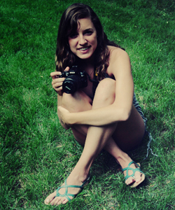

about myself

 my philosophy
I approach portrait photography rather unconventionally. A photograph is not just a document, but a piece of art. I believe the most valuable portrait photographs do three things--document an individual's physique, capture their mood or personality, and do these things in an artistic way. I value photographs that are a piece of art to the objective observer, but, to friends and family of the subject, also a memory. An invaluable keepsake. You--or you're son, daughter, parents, even pets--are that piece of art.
my goal
I want to create photographs that invoke a feeling. I want to accomplish want can't be accomplished in an indoor studio through poses and fake smiles.
a brief background
I've been interested in art my entire life, and view photography as the ultimate form of art and expression. My interest in photography was originally observational. Late middle school, I began experimenting myself, and a couple years later I was creating the photographs I had once admired. Of all the categories of photography, portrait particularly caught my eye. I find spontaneous, artistic portraits the most emotive of all art forms.
Melissa Samworth | Portrait Photography ®